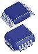

What is a
semiconductor?

A
semiconductor
is a material that behaves in
between a conductor and an
insulator. At ambient temperature, it conducts electricity more easily
than an insulator, but less readily than a conductor.
At very low temperatures, pure or
intrinsic semiconductors behave
like insulators. At higher temperatures though or under light, intrinsic
semiconductors can become conductive.
The addition of
impurities to a pure semiconductor can also
increase its conductivity.
Examples of semiconductors include chemical
elements and compounds such as silicon,
germanium, and
gallium arsenide.
The conductivity of a semiconductor increases with temperature, light,
or the addition of impurities because these increase the number of
conductive valence electrons of the semiconductor. Valence or outer
electrons are the carriers of the electrical current.
In an intrinsic semiconductor such as
silicon, the valence electrons of an atom are paired and shared with
other atoms, making covalent bonds that hold the crystal together. Under
such circumstances, these valence electrons are not free to move around
as electrical current. Temperature or light
excites the
valence electrons out of these bonds,
freeing them to conduct current. The
vacant positions left behind by the freed electrons, also known as
holes, can move around as well, contributing to
the flow of electricity. The energy needed to excite the electron and
hole is known as the energy gap.
Doping is the process of
adding impurities to an intrinsic semiconductor
to increase its ability to
conduct electricity. The difference in the
number of valence electrons between the doping material, or
dopant, and
host semiconductor results in negative (n-type) or positive (p-type)
carriers of electricity. The dopant is known as an
acceptor atom if it
'accepts' an electron from the semiconductor atom.
It is known as a
donor
atom if it 'donates' an electron to the semiconductor
atom.
For example, a silicon atom has four valence
electrons, two of which are required to form a covalent bond. In n- type
silicon, donor atoms such as phosphorus (P), with five valence
electrons, replace some silicon and provide extra negative electrons. In
p-type silicon, acceptor atoms with three valence electrons such as
aluminum (Al) lead to an absence of an electron, or hole, which acts
like a positive electron.
The
extra
electrons or holes conduct electricity.
When a p-type
semiconductor region is placed adjacent to an n-type region, they form a
diode, and the region of contact is called a
p-n junction. A
diode is a
two-terminal device that conducts current in only one direction.
Combinations of such junctions are used to make
transistors and other
semiconductor devices whose electrical behavior can be controlled by the
appropriate electrical stimuli.
The result of combining many transistors and other active components
along with passive ones on a single chip of silicon is the
integrated circuit,
a complex electronic device designed to perform certain functions
depending on the controlling signals.
See Also:
p-n Junction; Diode;
Bipolar Transistor; MOSFET; JFET;
IC Manufacturing
HOME
Copyright
©
2001-2006
www.EESemi.com.
All Rights Reserved.